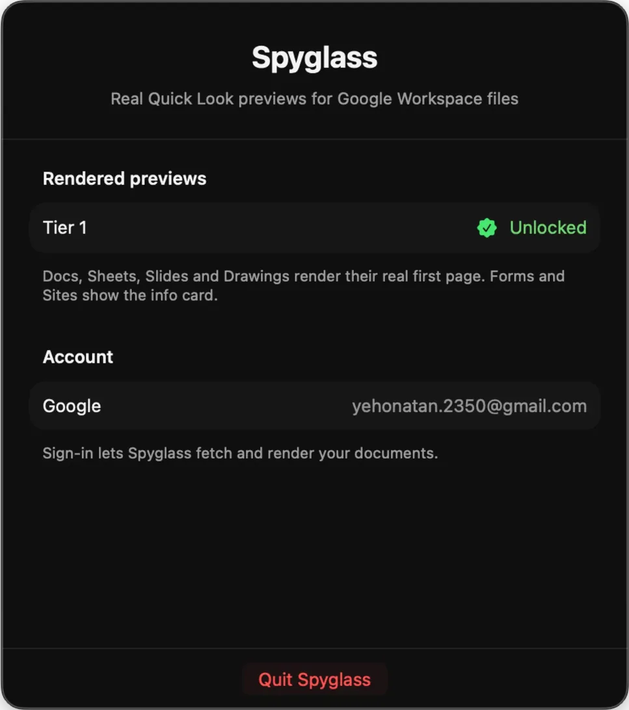

What Spyglass does
A Quick Look extension and a small menu-bar app. It hooks into the Space bar preview you already use. Select a stub file, press Space, the document is there.
No sign-in
A branded info card for all six file types: icon, title, owner, and a link to open it on Google. Instant, offline, no account. The whole free app, not a trial.

Rendered previews
The real first page for Docs, Sheets, Slides, and Drawings, fetched from your Drive and drawn on the spot. Signed out or slow network? It falls back to the info card, so nothing hangs.

The actual first page, in every format.
The paid tier draws the real first page, straight from your Drive.


The whole app fits in your menu bar.
Paste your license key, sign in with Google, check which tier is active. No dock icon, no windows. That's the whole app.

Free to try. $12 to see the page.
Info card
Rendered previews
Why Spyglass needs Google access
Rendered previews have to read the document out of your Drive. That is the only reason Spyglass asks you to sign in.
Spyglass uses the drive.readonly scope. It can read your files to draw the preview, and it cannot edit, delete, or share them.
One use only: fetching the document export to draw the first page.
Previews cache on your machine. There is no Spyglass server, and your documents never reach us or any third party.
Shown so you know which Google account is signed in. Spyglass never sends it anywhere.
Sign out anytime. That clears the stored tokens and revokes the grant at Google.
Questions
Is my data safe?
Yes. Spyglass requests the read-only drive.readonly scope, so it can never edit, delete, or share anything. Previews cache only on your Mac. No server, no uploads to us or anyone else. See the full Privacy Policy for details.
What do I get for free?
A branded info card for all six stub types: icon, title, owner, and a link to open it on Google. Works offline, no sign-in. A complete app, not a trial.
How do I unlock the paid features?
Buy on Gumroad for $12 and a license key arrives by email. Paste it into the menu-bar app, sign in with Google, and rendered previews turn on. One payment, no subscription.
Which file types work?
All six Google Drive stub types: .gdoc, .gsheet, .gslides, .gdraw, .gform, and .gsite. Rendered previews cover Docs, Sheets, Slides, and Drawings. Google has no export for Forms and Sites, so they always show the info card.
Does it work offline?
The info card works fully offline. Rendered previews need a connection to fetch the document from Drive, and if the network is down or slow, Spyglass falls back to the info card so nothing hangs or comes up blank.